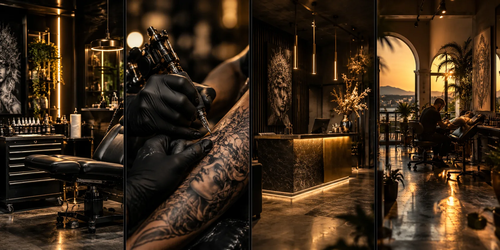

UNSERE GESCHICHTE
Aus einer Vision wurde eine Marke.
Aus Leidenschaft eine Erfolgsgeschichte.
Jede große Geschichte beginnt mit einer Idee. Unsere begann mit dem Mut, etwas Eigenes zu schaffen, Grenzen zu überwinden und aus Leidenschaft etwas Besonderes entstehen zu lassen.
Was einst mit einem Bekleidungsgeschäft und einer Vision begann, entwickelte sich unter der Leitung von Gründer Mads Kristensen zu einer internationalen Tattoo-Marke. Von den ersten Schritten im dänischen Sønderborg bis hin zu zahlreichen Studios in Europa steht Tattoo Fashion heute für Kreativität, Qualität und eine klare Philosophie: Tattoos sind mehr als Kunst auf der Haut – sie sind Ausdruck von Persönlichkeit, Freiheit und Individualität.

TATTOO FASHION
FROM PASSION TO SUCCESS.
Tattoo Fashion wurde mit dem Ziel gegründet, die Tattoo-Branche auf ein neues Level zu bringen. Nicht einfach nur Tattoos stechen, sondern Orte schaffen, an denen Kunst, Lifestyle und Menschen zusammenkommen.
Mit Leidenschaft, Durchhaltevermögen und dem festen Glauben an die eigene Vision wuchs aus einem einzelnen Studio eine Marke, die heute über Ländergrenzen hinweg Menschen verbindet.
Dabei steht nicht allein das Wachstum im Mittelpunkt, sondern vor allem das, was Tattoo Fashion ausmacht: außergewöhnliche Artists, individuelle Designs, höchste Qualitätsansprüche und eine Atmosphäre, in der sich jeder willkommen fühlt.

UNSERE PHILOSOPHIE
MORE THAN A TATTOO.
A LIFESTYLE.
Für uns ist jedes Tattoo einzigartig. Hinter jedem Motiv steckt eine Geschichte, eine Erinnerung oder eine persönliche Bedeutung. Genau deshalb geht es bei Tattoo Fashion nicht nur um das fertige Kunstwerk, sondern um das gesamte Erlebnis.
Unsere Studios sind Orte, an denen Ideen Wirklichkeit werden, Kreativität keine Grenzen kennt und aus Vorstellungen einzigartige Kunstwerke entstehen.
Was uns antreibt, ist die Leidenschaft für das, was wir tun. Was uns verbindet, ist die Liebe zur Kunst. Und was uns ausmacht, ist der Mut, immer weiterzugehen.
Unsere Geschichte hat klein angefangen. Unsere Vision war schon immer groß.